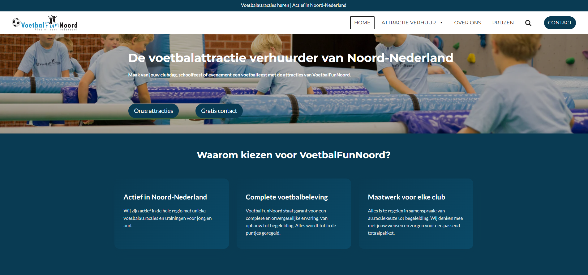

Van AI-dashboards tot automatiseringen, concrete projecten voor echte bedrijven, met meetbare uitkomsten.
LeadGen Group werkte met data verspreid over vijf losse systemen. Rapporten werden handmatig samengesteld, inzichten kwamen te laat en beslissingen gingen op gevoel. We bouwden een centraal dashboard dat alles koppelt, realtime bijhoudt en dagelijks concrete adviezen genereert via AI-modellen.
Alle data zat in losse systemen die niet met elkaar communiceerden, CRM, analytics, e-mail en finance. Elke week ging er meerdere uren verloren aan het handmatig samenstellen van rapporten. Intussen miste het team kansen omdat inzichten altijd te laat kwamen.
We bouwden een op maat gemaakt dashboard dat alle systemen via API's koppelt in één realtime overzicht. Op basis van de gecombineerde data draaien slimme AI-modellen continue analyses, en genereren ze dagelijks drie tot vijf direct uitvoerbare adviezen, afgestemd op de actuele situatie van het bedrijf.
Voetbal Fun Noord was nauwelijks vindbaar online. We bouwden een nieuwe website en zetten een complete SEO-strategie op zodat de club structureel gevonden wordt door sporters in de regio.
De oude website was verouderd, niet mobielvriendelijk en stond nergens in Google. Potentiële leden vonden de club simpelweg niet terug.
Nieuwe mobielvriendelijke website plus een complete SEO-strategie: zoekwoordenonderzoek, technische optimalisatie en lokale SEO zodat Voetbal Fun Noord gevonden wordt door iedereen die in de buurt zoekt.
